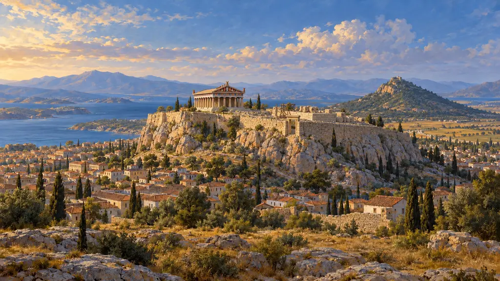
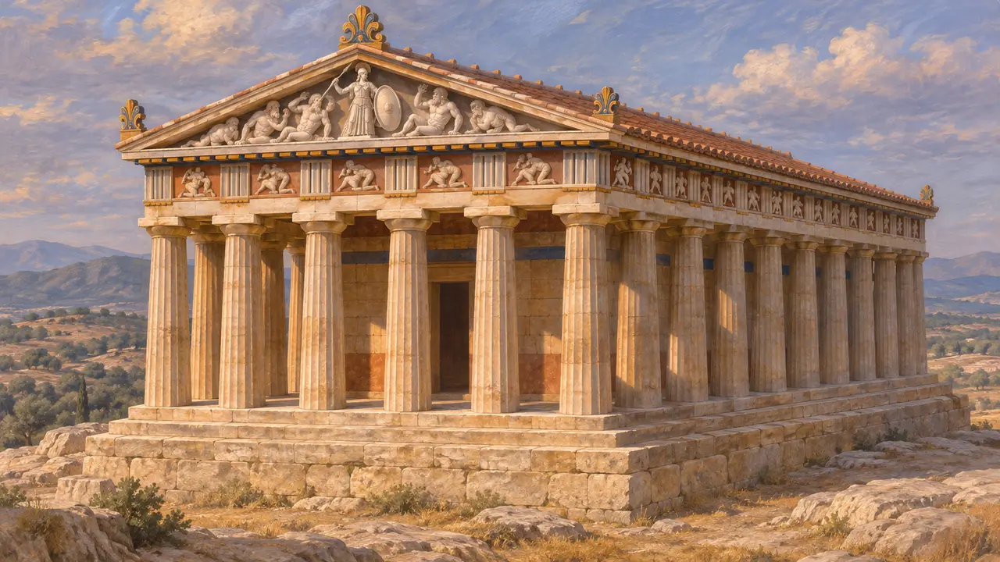
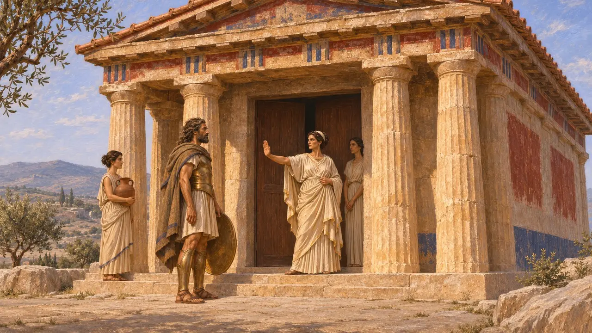
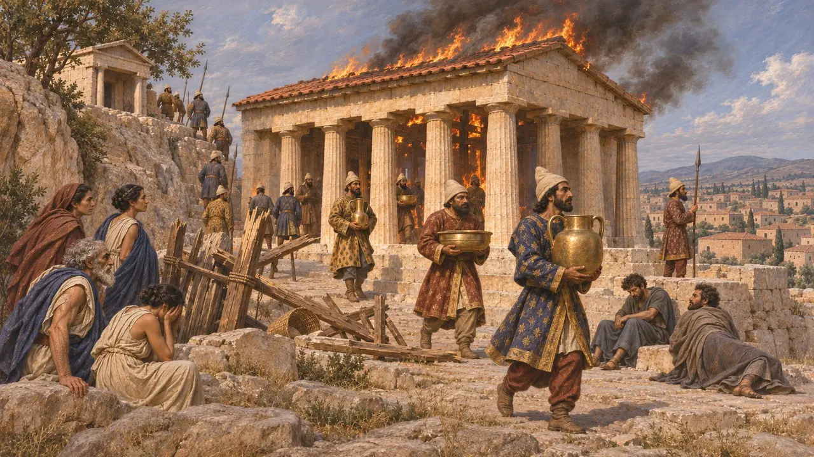
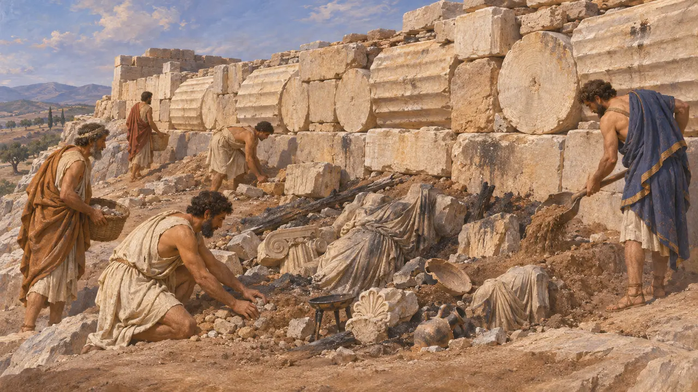
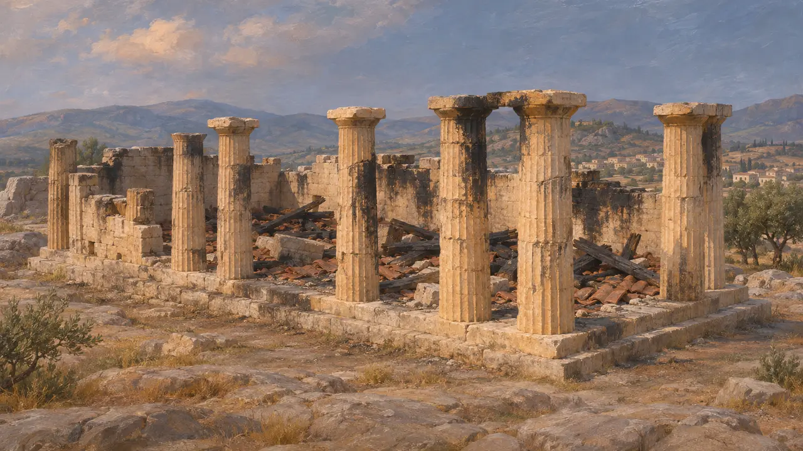

Ancien temple d'Athéna
Temple d'Athéna Polias sur l'Acropole d'Athènes, incendié par les Perses en 480 av. J.-C.
L'Ancien temple était le principal temple d'Athéna Polias, protectrice d'Athènes. Il se dressait sur l'Acropole, entre les emplacements du futur Parthénon et de l'Érechthéion, et abritait probablement l'antique statue de la déesse en bois d'olivier. Lorsque l'armée de Xerxès prit l'Acropole en 480 av. J.-C., le sanctuaire fut pillé et incendié, et sa ruine devint l'un des souvenirs grecs les plus durables de l'invasion perse.
Dans le jeu : L'Ancien temple se dresse sur la carte d'un niveau en tant que bâtiment historique que le joueur ne peut pas construire. La note du jeu selon laquelle les Perses l'incendièrent en 480 av. J.-C. suit Hérodote 8.53.

Des fondations entre deux temples plus tardifs
Dans les sourcesWilhelm Dörpfeld identifia ses fondations de calcaire en 1885, juste au sud de l'Érechthéion. Elles appartiennent à un temple dorique entouré de colonnes sur ses quatre côtés. Il fut probablement construit vers 525-500 av. J.-C., peut-être sous les fils de Pisistrate ou peu après les réformes de 508 av. J.-C. Des fragments de son fronton de marbre, montrant Athéna combattant les géants, ont survécu et se trouvent aujourd'hui au musée de l'Acropole.
W. Dörpfeld, Der alte Athenatempel auf der Akropolis, 1885; J. M. Hurwit, The Athenian Acropolis, 1999

Un temple plus ancien au même emplacement
ContestéLes historiens divergent sur ce qui se dressait ici auparavant. Certains placent sur ces fondations un temple d'environ 570-560 av. J.-C., orné de sculptures en calcaire comme le monstre à trois corps surnommé Barbe-Bleue. D'autres situent cet édifice ancien sous le Parthénon plus tardif. Hérodote dit qu'une prêtresse arrêta le roi spartiate Cléomène aux portes du sanctuaire de la déesse en 508 av. J.-C. : un temple d'Athéna se dressait donc alors sur le rocher, même s'il ne précise pas de quel édifice il s'agissait.
Herodotus 5.72; J. M. Hurwit, The Athenian Acropolis, 1999

Le sac de 480 av. J.-C.
Récit antiqueSelon Hérodote, la plupart des Athéniens quittèrent la ville, mais des trésoriers du temple et des citoyens pauvres tinrent l'Acropole derrière une palissade de bois. Les Perses escaladèrent le versant abrupt près du sanctuaire d'Aglauros, tuèrent défenseurs et suppliants, pillèrent le sanctuaire et incendièrent toute l'Acropole. Il ajoute que Xerxès dépêcha un cavalier à Suse pour porter la nouvelle. Aucun texte perse conservé ne mentionne l'événement.
Herodotus 8.51-54

Les décombres laissés par les Perses
Dans les sourcesLes fouilles de l'Acropole en 1885-1890 ont mis au jour des sculptures brûlées, des offrandes et des éléments architecturaux enfouis dans les remblais déposés lorsque les Athéniens nivelèrent le rocher après la guerre. Ce dépôt est appelé « remblai perse », bien qu'une partie ait pu être enfouie plus tard. Des blocs de l'Ancien temple et des tambours de colonnes du Pré-Parthénon inachevé furent intégrés au mur nord de l'Acropole, où l'on peut encore les voir.
P. Kavvadias and G. Kawerau, Die Ausgrabung der Akropolis, 1906; J. M. Hurwit, The Athenian Acropolis, 1999

Une ruine laissée debout
ContestéLes historiens débattent encore de la question de savoir si le temple incendié fut sommairement réparé. Certains pensent que ses salles occidentales furent remises en état pour servir de trésor, et que l'ancien temple d'Athéna qui, selon Xénophon, prit feu en 406 av. J.-C. était cet édifice. D'autres estiment qu'il fut déblayé peu après 480 av. J.-C. Lycurgue et Diodore rapportent un serment prêté avant Platées de ne pas reconstruire les temples incendiés par les Barbares, mais son authenticité était déjà mise en doute dans l'Antiquité et l'est encore aujourd'hui.
Xenophon, Hellenica 1.6.1; Lycurgus, Against Leocrates 81; Diodorus 11.29
Sources
- Herodotus 8.51-55
- Herodotus 5.72
- J. M. Hurwit, The Athenian Acropolis, 1999
- P. Kavvadias and G. Kawerau, Die Ausgrabung der Akropolis, 1906
- Xenophon, Hellenica 1.6.1
- Diodorus 11.29